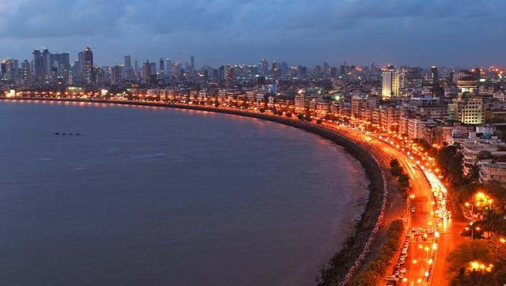

About Us
Fashion Paradise Tours & Travels:
Srinagar, Jammu Kashmir Mobile: 095413 xxxxx test@gmail.com
Srinagar
Dal Lake, Sep 2, 2017

Srinagar is the largest city and the summer capital of the Indian union territory of Jammu and Kashmir. It lies in the Kashmir Valley on the banks of the Jhelum River, a tributary of the Indus, and Dal and Anchar lakes. The city is known for its natural environment, gardens, waterfronts and houseboats. It is also known for traditional Kashmiri handicrafts like Kashmir shawls and also dried fruits. It is the northernmost city of India with over one million people.
Varanasi
Ghats, Dec 7, 2017

Varanasi, also known as Benares, Banaras, or Kashi, is a city on the banks of the river Ganges in Uttar Pradesh, India, 320 kilometres south-east of the state capital, Lucknow, and 121 kilometres east of Allahabad. A major religious hub in India, it is the holiest of the seven sacred cities in Hinduism and Jainism, and played an important role in the development of Buddhism and Ravidassia. Varanasi lies along National Highway 2, and is served by Varanasi Junction railway station and Lal Bahadur Shastri International Airport.
Mumbai
Marine Drive, May 7, 2018
Mumbai is the capital city of the Indian state of Maharashtra. According to the United Nations, as of 2018, Mumbai is the second-most populous city in the country after Delhi and the seventh-most populous city in the world with a population of roughly 20 million. As per Indian government population census of 2011, Mumbai was the most populous city in India with an estimated city proper population of 12.5 million living under Municipal Corporation of Greater Mumbai. Mumbai is the centre of the Mumbai Metropolitan Region, the sixth most populous metropolitan area in the world with a population of over 23 million. Mumbai lies on the Konkan coast on the west coast of India and has a deep natural harbour. In 2008, Mumbai was named an alpha world city. It has the highest number of millionaires and billionaires among all cities in India. Mumbai is home to three UNESCO World Heritage Sites: the Elephanta Caves, Chhatrapati Shivaji Maharaj Terminus, and the city's distinctive ensemble of Victorian and Art Deco buildings.